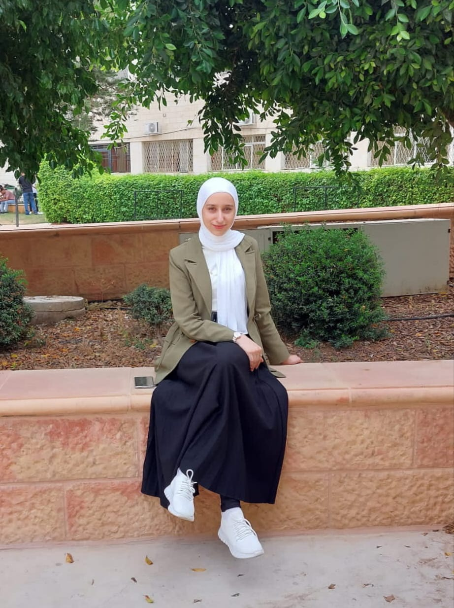

Hi, I'm Heba Qasim, I'm from Jenin, I currently studying Computer Systems Engineering at PTUK, in my third year , I'm excellent in problem-solving and have a strong command of programming languages like C++, Java, along with expertise in data structures, algorithms, and databases. I enjoy exploring computer systems and look forward to contributing to the field.
 contact